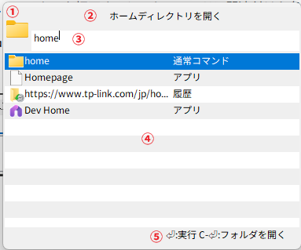

入力画面
概要
アプリが起動している状態でランチャー呼び出しキー(デフォルト設定:Alt-Space)を押下すると、入力画面が表示される。
入力画面にキーワードを入力してEnterキーを押下すると、キーワードに関連付けた各種操作を実行できる。
画面の説明

① アイコン表示欄
選択している候補に関連付けられたアイコンを表示する
② コメント表示欄
選択している候補の説明を表示する
ここをドラッグしてウインドウ表示位置を変えることができる
③ 入力欄
ここにキーワード(やパラメータ)を入力する。
Ctrl+Backspaceで入力中のキーワードを単語単位で削除するTabキーを押下するとキーワードを補完するEscキーを押下すると、入力中のキーワードを消去する。
入力中のキーワードが空のときは入力画面を非表示にする。
④ 候補リスト
入力欄のキーワードに該当する候補の一覧を表示する
矢印キー(↑↓）やマウスクリックで候補を変更することができる
入力欄に文字が入力されていると表示される
⑤ ガイド
コマンドを実行したときに実行される動作をキー別に表示する
パラメータ候補リスト
コマンドのパラメータを入力すると、入力欄の下に追加候補のポップアップが表示されることがある。

入力したパラメータに対応する候補が表示され、候補を確定すると入力中のパラメータが選択した候補に置き換えられる。
表示された候補は、次の操作で選択・確定できる。
↑/↓: 候補を選択するTab: 選択中の候補を入力欄へ反映するEnter: 選択中の候補を確定してコマンドを実行するマウスクリック: クリックした候補を確定する
候補が存在しない場合や、入力画面が非アクティブになった場合は、ポップアップは表示されない。
キーワードを入力する
入力欄にキーワードを入力し、Enterキーを押下すると、選択中の候補を実行する。
候補が複数表示された場合は、矢印キーまたはマウスで実行したい候補を選択してからEnterキーを押す。
入力画面を閉じるには、入力欄が空の状態でEscキーを押す。入力欄に文字がある状態でEscキーを押すと、まず入力内容が消去される。
ファイルを開く
ファイルやフォルダの絶対パスを入力すると、パスを直接開くことができる。
パスに空白が含まれている場合でも、絶対パス全体を1つの入力として扱う。
例えば、次のように入力する。
C:\path with spaces\
コマンドのパラメータとして絶対パスを入力する場合も、パス全体を1つのパラメータとして扱う。
この画面が表示されているときにF1キーを押すと、マニュアルを開く。